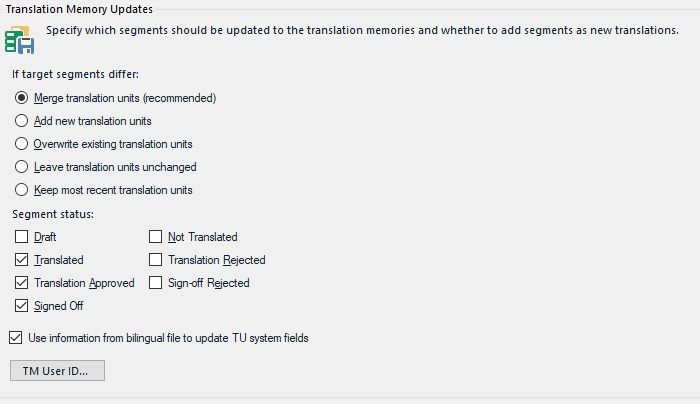

Update Translation Memory Settings
The batch task for updating TMs goes through one or several bilingual (SDLXliff) files and updates one or more TMs using the translated file content. Updating in this case means overwriting existing TUs with edited content from the bilingual files, or adding new TUs, which do not yet exist in the TM(s).
TMs can be updated at the end of a project lifecycle using the fully translated, reviewed, and signed-off bilingual files. However, the update can also occur in the middle of a project, e.g. to provide an editor or proofreader with a TM that is based on what the translator did in the previous workflow step.
Mid-project TM updates are usually performed on project translation memories, i.e. smaller TMs that contain project-specific content. The update that is based on the fully reviewed and signed-off documents is usually done on the main (or master) TMs, which are normally much larger than the project TMs, as they contain TUs from numerous translation projects, and are used for future reference.
This page provides an example of the settings that can be configured when updating a file-based translation memory using the content of a bilingual (SDLXliff) file.
The screenshot below illustrates the options that you can configure in Trados Studio when running an update TM task.

To programmatically configure the task settings implement a helper function called GetUpdateTmTaskSettings, which takes a FileBasedProject object as parameter. The settings for a particular task are saved within the project. The settings can either apply to the entire project or can be target-language specific, e.g. when the German files require different settings than the French files. Each project is associated with a settings bundle, which contains the settings for all tasks (e.g. analyze, pre-translate, etc.). First, create a ISettingsBundle object by applying the GetSettings method to the project object. Then apply the GetSettingsGroup method to generate a settings object based on the TranslationMemoryUpdateTaskSettings class:
ISettingsBundle settings = project.GetSettings();
TranslationMemoryUpdateTaskSettings updateTmSettings = settings.GetSettingsGroup<TranslationMemoryUpdateTaskSettings>();
Adding New Translation Units During the Update
Through the AlwaysAddNewTranslation property you can determine what should happen when during the update procedure it is found that the translation for the same source segment differs between the TM and the bilingual (SDLXliff) document. By default, the translation from the bilingual document overwrites the translation stored in the TM. As it can be assumed that the bilingual document has gone through a review and approval process, the document can be reasonably considered to be of higher quality than the TM as it is before the update TM process. However, if you have reason to believe that both the translation from the TM and the one from the bilingual document are correct and valid, you may want both solutions to end up in the main TM. In this case you can set this property to True. However, note that the risk is that you might end up cluttering your TM with duplicate TUs (i.e. TUs that have the same source segment). This is why this setting is by default switched off.
updateTmSettings.AlwaysAddNewTranslation.Value = true;
Filtering for Segment Status
In an SDLXliff document each segment pair has a particular status depending on whether it has been translated, approved, verified, signed-off, rejected, etc. During the update process you will usually only want fully translated, approved, and signed-off content to be stored in the TM, i.e. no draft or rejected translations. The sample code below shows the various properties you may set for this purpose as well as their default values. In the code snippet below you see the available properties that are used to determine which segment status values should be considered when updating the TM. The list below also shows which status values are by default considered for the TM update (True) and which ones are not taken into account when updating TMs (False)
updateTmSettings.UpdateWithApprovedSignOffSegments.Value = true;
updateTmSettings.UpdateWithApprovedTranslationSegments.Value = true;
updateTmSettings.UpdateWithTranslatedSegments.Value = true;
updateTmSettings.UpdateWithDraftSegments.Value = false;
updateTmSettings.UpdateWithRejectedSignOffSegments.Value = false;
updateTmSettings.UpdateWithRejectedTranslationSegments.Value = false;
updateTmSettings.UpdateWithUnspecifiedSegments.Value = false;
Last, you need to apply the settings to the project through the UpdateSettings method, so that the settings are persisted in the project.
project.UpdateSettings(settings);
Putting it All Together
The function should look as shown below:
public void GetUpdateTmTaskSettings(FileBasedProject project)
{
#region "UpdateTmTaskSettings"
ISettingsBundle settings = project.GetSettings();
TranslationMemoryUpdateTaskSettings updateTmSettings = settings.GetSettingsGroup<TranslationMemoryUpdateTaskSettings>();
#endregion
#region "NewTranslations"
updateTmSettings.AlwaysAddNewTranslation.Value = true;
#endregion
#region "Status"
updateTmSettings.UpdateWithApprovedSignOffSegments.Value = true;
updateTmSettings.UpdateWithApprovedTranslationSegments.Value = true;
updateTmSettings.UpdateWithTranslatedSegments.Value = true;
updateTmSettings.UpdateWithDraftSegments.Value = false;
updateTmSettings.UpdateWithRejectedSignOffSegments.Value = false;
updateTmSettings.UpdateWithRejectedTranslationSegments.Value = false;
updateTmSettings.UpdateWithUnspecifiedSegments.Value = false;
#endregion
#region "UpdateTaskSettings"
project.UpdateSettings(settings);
#endregion
}
See Also
Update Translation Memory Settings